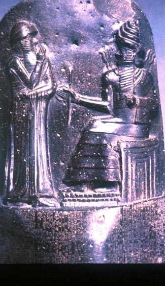
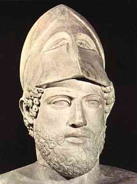
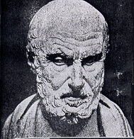

|
|
|
|
che regolano la vita della società |
connaturati nell’uomo. |
Non sempre, però, queste due leggi coincidono.
Partiamo nella nostra analisi storica dal vicino Oriente: Sumeri,
Assiri, Babilonesi autori dei primi “codici” di leggi a noi pervenuti.
Prima che scrivessero le loro leggi vivevano in tribù, comandati
da un capo avente poteri e diritti , ma dove ogni altro membro aveva diritti
suoi, tra cui quello di possedere dei beni: il senso di proprietà.
Questo determinò un vero e proprio patto sociale : il rispetto della
persona e dei beni altrui costituiva la garanzia che i beni e la propria
persona sarebbero stati rispettati.
Questo, però, valeva solo per il clan e non si adattavano
all’”altro”, al “diverso”.
Leggi Sumere :
Codice di Ur-Nammu.
Primo “codice“ inteso come raccolta di leggi .
Nasce come necessità di uniformare norme diverse, attuate in
paesi che prima erano indipendenti e che aveva conquistato.
|  | Leggi Babilonesi:
Codice di Hammurapi: A Susa, la spedizione francese di J.De Morgan rinvenne,in tre pezzi, una stele alta 2,25 metri: era il così detto “ codice” di Hammurapi:la più imponente e nota raccolta di leggi mesopotamiche, ispirata ed approvata dal re stesso, ma probabilmente stilata da un gruppo di giuristi. Scritto in lingua accadica, con caratteri cuneiformi si differenzia dalle legislazioni precedenti: in questo codice alcuni punizioni appaiono più dure, ma si cerca di alleviare le pene agli sfortunati e ai subalterni, di proteggere la donna relegata nella sua condizione inferiore,di evitare che contadini ed artigiani vengano sfruttati. |
|  |  |
Antica Grecia
Sparta
Diritti civili e politici:
1) Non erano osservati i diritti relativi alla parità senza
distinzione di sesso ,razza, origine , residenza
2) Non c’era uguaglianza tra uomini e donne
3) Il diritto di proprietà era riservato solo agli Spartani
4) Il diritto all’istruzione gratuita era garantito solo per
gli Spartiati e per i Perieci.
la società spartana era formata da tre classi
a) Spartiati o omoioi ( uguali ) discendenti dei conquistatori
ed avevano pieni diritti politici e civili.
b) Perieci ( abitanti della periferia ) era la classe degli
uomini liberi che si erano arresi agli invasori, erano privi di potere
politico ed erano dediti alle attività commerciali ed artigianali.
c) Iloti , discendenti delle popolazioni originarie del Peloponneso,
privi di ogni diritto politico, ed erano vincolati alle terre che lavoravano
per conto degli Spartani, quindi di fatto erano schiavi ,
Atene
Solone : istituì il criterio della ricchezza per poter
ricoprire le alte cariche di governo.
Ciò comportò la divisione della popolazione in quattro
categorie ,classificate a seconda della rispettiva produttività
Pericle: apportò riforme democratiche ed attuò un programma che comprendeva una forte politica sociale e mirava alla reale partecipazione dei ceti bassi, anche mediante l’elevazione del livella culturale del popolo ateniese.
1 ) Con la grafè paranomos i cittadini potevano essere
fatti esiliare per dieci anni e in generale fatti imprigionare solo per
le idee politiche differenti
2 ) Solo i figli di madre e padre ateniese avevano la cittadinanza.
3 ) Solo gli uomini liberi, adulti, e cittadini potevano partecipare
alla vita pubblica